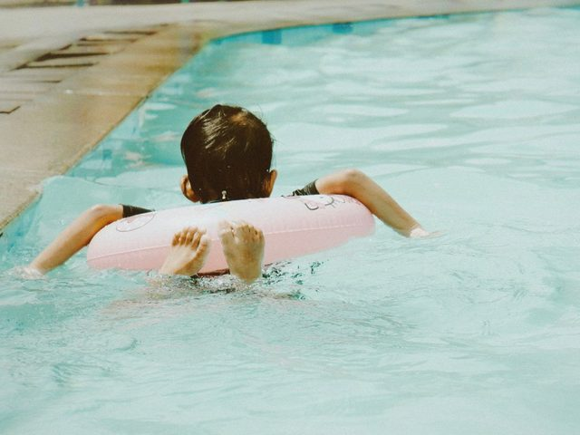
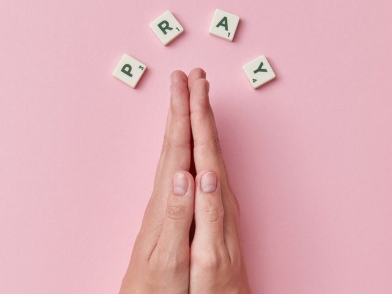
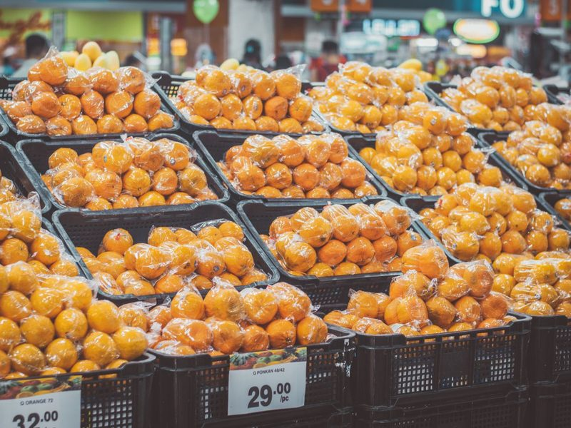

UNIT 36 · VOCABULARY
P 開頭（三）
P-III
42 個單字聽・唸・用
本單元單字一覽
WORD UP「P-III」的 42 個字（pleasure 到 priest）。紅色＝要複習，藍色標籤＝WORD UP 標熟記、還要在這裡考對。
pleasurepluspocketpoempointpoisonpolicepolicemanpolicypolitepollutepollutionpondpoolpoorpopcornpopularpopulationporkpositionpositivepossiblepostpostcardpotpotatopoundpowderpowerpowerfulpracticepraisepraypreciouspreferpreparepresentpresidentpressprettypricepriest
每個字都有 🔊，先聽發音、跟著唸，再看例句。
單字 1–4
😊
pleasure
樂趣；榮幸n.
Thank you! — It's my pleasure.
謝謝你！——不客氣。
謝謝你！——不客氣。
➕
plus
加prep.
Two plus three is five.
二加三等於五。
二加三等於五。

pocket
口袋n.
He put his hands in his pockets.
他把手插在口袋裡。
他把手插在口袋裡。
poem
詩n.
Can you read this poem aloud?
你可以把這首詩唸出來嗎？
你可以把這首詩唸出來嗎？
單字 5–8

point
點；重點；分數；指n./v.
Don't point at people.
不要用手指著別人。
不要用手指著別人。

poison
毒藥n.
Some mushrooms contain poison.
有些蘑菇有毒。
有些蘑菇有毒。
police
警方n.
The police are looking for the thief.
警方正在找小偷。
警方正在找小偷。
policeman
警察n.
The policeman showed me the way.
那位警察幫我指路。
那位警察幫我指路。
單字 9–12
📋
policy
政策n.
The school has a no-phone policy.
學校有禁止手機的規定。
學校有禁止手機的規定。

polite
有禮貌的adj.
Be polite to the elders.
對長輩要有禮貌。
對長輩要有禮貌。

pollute
污染v.
Factories pollute the river.
工廠污染了河川。
工廠污染了河川。

pollution
污染n.
Air pollution is a big problem.
空氣污染是個大問題。
空氣污染是個大問題。
單字 13–16

pond
池塘n.
There are fish in the pond.
池塘裡有魚。
池塘裡有魚。

pool
游泳池n.
Let's go swimming in the pool.
我們去泳池游泳吧。
我們去泳池游泳吧。

poor
貧窮的；可憐的；差的adj.
The poor dog is hungry.
那隻可憐的狗餓了。
那隻可憐的狗餓了。

popcorn
爆米花n.
We ate popcorn at the movies.
我們看電影時吃爆米花。
我們看電影時吃爆米花。
單字 17–20
🔥
popular
受歡迎的adj.
This game is popular with kids.
這個遊戲很受小孩歡迎。
這個遊戲很受小孩歡迎。

population
人口n.
What is the population of Taipei?
台北的人口是多少？
台北的人口是多少？

pork
豬肉n.
I had braised pork rice for lunch.
我午餐吃滷肉飯。
我午餐吃滷肉飯。

position
位置；職位n.
What position do you play?
你打什麼位置？
你打什麼位置？
單字 21–24
👍
positive
正面的；積極的adj.
Always think positive.
要常正面思考。
要常正面思考。
✅
possible
可能的adj.
Please reply as soon as possible.
請盡快回覆。
請盡快回覆。

post
郵件；張貼n./v.
She posted a photo online.
她在網路上貼了一張照片。
她在網路上貼了一張照片。

postcard
明信片n.
I sent a postcard from Japan.
我從日本寄了一張明信片。
我從日本寄了一張明信片。
單字 25–28

pot
鍋子；壺n.
Mom is cooking soup in a big pot.
媽媽用大鍋子煮湯。
媽媽用大鍋子煮湯。

potato
馬鈴薯n.
I like mashed potatoes.
我喜歡馬鈴薯泥。
我喜歡馬鈴薯泥。

pound
英鎊；磅n.
This book costs ten pounds.
這本書十英鎊。
這本書十英鎊。

powder
粉末n.
Add some milk powder to the water.
在水裡加些奶粉。
在水裡加些奶粉。
單字 29–32

power
力量；電力n.
The power went out during the storm.
暴風雨時停電了。
暴風雨時停電了。
💪
powerful
強大的；有力的adj.
The typhoon was very powerful.
那個颱風威力很強。
那個颱風威力很強。
practice
練習v./n.
I practice playing the piano every day.
我每天練鋼琴。
我每天練鋼琴。
👏
praise
稱讚v./n.
The teacher praised my drawing.
老師稱讚了我的畫。
老師稱讚了我的畫。
單字 33–36

pray
祈禱v.
We prayed for good weather.
我們祈求好天氣。
我們祈求好天氣。

precious
珍貴的adj.
Time is precious.
時間很寶貴。
時間很寶貴。
⚖️
prefer
較喜歡v.
I prefer tea to coffee.
比起咖啡我比較喜歡茶。
比起咖啡我比較喜歡茶。
📚
prepare
準備v.
I'm preparing for the exam.
我正在準備考試。
我正在準備考試。
單字 37–40

present
禮物；現在；出席的；呈現n./adj./v.
Thank you for the birthday present.
謝謝你的生日禮物。
謝謝你的生日禮物。

president
總統；總裁；會長n.
The president gave a speech.
總統發表了演說。
總統發表了演說。

press
按；壓；新聞界v./n.
Press the button to start.
按下按鈕開始。
按下按鈕開始。

pretty
漂亮的；相當adj./adv.
Your dress is pretty.
你的洋裝很漂亮。
你的洋裝很漂亮。
單字 41–42

price
價格n.
The price of eggs went up.
雞蛋的價格漲了。
雞蛋的價格漲了。
priest
牧師；神父n.
The priest spoke at the church.
神父在教堂裡講道。
神父在教堂裡講道。
重點整理
| 說法 | 中文 | 例子 |
|---|---|---|
| prefer A to B | 比起 B 較喜歡 A | prefer dogs to cats |
| prepare for | 為…做準備 | prepare for the test |
| practice + V-ing | 練習做… | practice speaking English |
| be popular with | 受…歡迎 | popular with teenagers |
| as soon as possible | 盡快 | Call me as soon as possible. |
| pollute / pollution | 污染（動詞）／ 污染（名詞） | water pollution |
| polite / impolite | 有禮貌 ／ 沒禮貌 | a polite boy |
the police 當複數：The police are coming.；potato → potatoes。
快問快答：中文 → 英文
1樂趣；榮幸pleasure
2口袋pocket
3點；重點；分數；指point
4警方police
5政策policy
6污染pollute
7池塘pond
8貧窮的；可憐的；差的poor
快問快答：英文 → 中文
1popular受歡迎的
2pork豬肉
3positive正面的；積極的
4post郵件；張貼
5pot鍋子；壺
6pound英鎊；磅
7power力量；電力
8practice練習
學完了！接下來
複習方法
review
- 回到「📗 單字卡」，按「遮中文」自己考自己
- 再按「遮英文」，看中文說出英文
- 每個例句跟著 🔊 唸一次
準備好了
- 按右上角「📝 前往測驗」
- 測驗錯的題目要訂正到全對
- 訂正完成補送 1 點